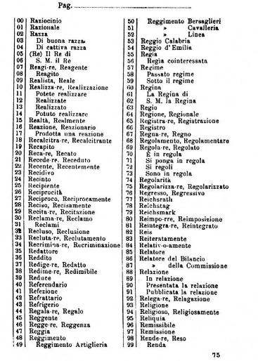

Le télégramme de Panizzardi et l'affaire Dreyfus
Après l'apparition du télégraphe, les codes commerciaux sont très en vogue en Europe à la fin du XIXè siècle. Si la France utilise le code Sittler, l'Italie utilise elle le code Baravelli, de son vrai nom le Dizionario per corripondenze in cifra, dont l'auteur est Baravelli. Il était divisé en quatre sections :
- Première section : dix groupes codiques d' un seul chiffre, consacrés aux voyelles et aux signes de ponctuation. L'utilisateur avait la possibilité de modifier l'attribution de ces dix chiffres aux dix éléments clairs.
- Deuxième section : cent groupes codiques de deux chifrres correspondant aux consonnes, aux indications grammaticales et aux verbes auxiliaires. L'utilisateur avait la possibilité de distribuer différemment les chiffres des dizaines.
- Troisième section : mille groupes codiques de trois chiffres correspondant à 1000 syllabes, répartis en dix pages. Les numéros de ligne étaient imprimés, mais la numérotation des pages (deux chiffres par page) était laisée au choix de l'utilisateur.
- Quatrième section : 10 000 groupes codiques de quatre chiffres répartis en cent pages, consacrés au vocabulaire (mots et expressions). Les numéros de ligne étaient imprimés, mais la numérotation des pages (deux chiffres par page) était laissée au choix de l'utilisateur.
On remarquera que les cryptogrammes obtenus avec le Baravelli se composaient de groupes de quatre longueurs différentes, ce qui avait pour effet de trahir son emploi. Voici ci-dessous une page du code Baravelli :
Le service de décryptement français eut pour la première fois l'occasion de se mesurer au Baravelli lorsqu'il intercepta un échange de messages entre un neveu du roi d'Italie, le comte de Turin, et une noble dame du même pays. Le code fut dérobé au domicile de cette dernière, ce qui rendit possible le déchiffrement. Celui-ci ne révéla qu'une correspondance sentimentale dont l'intérêt politique ou diplomatique était sans doute bien mince.
Mais le Baravelli fit sa réapparition dans des circonstances bien plus sérieuses, au début de l'affaire Dreyfus. En cette fin de siècle, la France était encore sous le choc de la défaite de 1870. Dans le pays, de nombreuses personnes étaient convaincues que "si la France a perdu la guerre, ce ne peut être par infériorité militiare, c'est parce que des trahisons ont paralysé ses forces", ce qui engendra une forme de paranoia. C'est dans ces circonstances que le Service des renseignements de l'armée (la "Section de Statistique") intercepta en septembre 1894 une lettre - le "bordereau" - adressé à Schwartzkoppen, l'attaché militaire allemand en poste à Paris, dans laquelle l'expéditeur proposait de livrer à l'Allemagne des renseignements intéressant la Défense nationale. Très vite, les soupçons se portèrent sur le capitaine Alfred Dreyfus, officier stagiaire à l'Etat-Major. La presse notamment se déchaîna furieusement, inspirée d'une part par le patriotisme, mais aussi par l'antisémitisme virulent qui régnait à cette époque dans de nombreux milieux.
La même section de Statistique intercepta alors, le 2 novembre 1894 un télégramme de l’attaché militaire italien, le lieutenant-colonel Alessandro Panizzardi, au général chef d’état-major Nicola Marselli. Le contenu de ce télégramme était le suivant :
Le fait que les groupes chiffrés étaient de longueur variable orienta immédiatement les recherches sur le Baravelli. Une première tentative, basée sur l'hypothèse d'une pagination normale, ne donna rien de cohérent. Il fallait donc s'orienter soit vers une pagination spéciale, soit vers un surchiffrement. C'est alors qu'on fit intervenir la technique du mot probable. On choisit bien naturellement le mot Dreyfus. Bien entendu, ce mot ne figurait pas dans le code, il devait donc avoir été syllabé. Les décrypteurs, se référant au code, en déduisirent que le découpage était le suivant : dr, e, y, fus. Le premier et le dernier fragment se trouvaient dans la section à trois chiffres, le deuxième dans la section à un chiffre, le troisième dans la section à deux chiffres.
Rappelons que les dix chiffres qui composaient la première section étaient dans un ordre incohérent, que, dans la deuxième section, l'ordre des chiffres des dizaines l'était également et que, pour les deux dernières sections, la pagination était inconnue. Par contre, dans les deux dernières sections, les numéros de lignes étaient imprimés, de même que les chiffres des unités de la deuxième section.
Quatre groupes successifs du télégramme répondaient aux conditions du syllabage déterminé par les décrypteurs : 527 3 88 706. Le chiffrement des fragments dr, e, y, fus donnait obligatoirement la séquence suivante : ?27 ? ?8 ?06. Le mot probable était placé.
En dépit de ce premier succès, le travail ne progressa que lentement, donnant tout d'abord autour du 6 novembre un texte fragmentaire qu'on pouvait considérer comme incriminant Dreyfus, avant que le message ne soit totalement déchiffré vers le 13 novembre.
| 44 | 7836 | 527 | 3 | 88 | 706 |
| se | capitano | dr | e | y | fus |
| 6458 | 71 | 18 | 0288 | 5715 | |
| non | ha | avuto | relazione | costa | |
| 3716 | 7567 | 7943 | 2107 | ||
| sarebbe conveniente | incaricare | ambasciatore | smentire | ||
| 0018 | 7606 | 4891 | 6165 | ||
| ufficialmente | evitare | commenti | stampa |
Ce télégramme allait donc en faveur de l'innoncence de Dreyfus. Cependant, pour s'assurer de la véracité de leur méthode de déchiffrement, l'armée française tendit un piège à Panizzardi. Elle concocta un texte concernant une opération d'espionnage en Italie, texte comprenant de nombreux noms propres, et, par l'intermédiaire d'un agent double, elle le fit tomber dans les mains de Panizzardi. Comme on pouvait s'y attendre, celui-ci en fit immédiatement référence à son chef d'état-major en utilisant le même code. La copie de son message chiffré fut remise au service de décryptement qui disposa alors d' un cryptogramme et du texte clair correspondant, qui de surcroit avait été conçu pour apporter un maximum d'informations sur la pagination particulière du Baravelli. L'exactitude du décryptement du message concernant Dreyfus put ainsi être parfaitement confirmée. Malheureusement, les autorités de la justice militaire, acharnées à prouver la culpabilité de Dreyfus, le falsifièrent pour étayer leurs accusations, et il fallut attendre bien longtemps pour que Dreyfus soit innocenté, et le vrai coupable de la trahison découvert.
Remarquons qu'il paraît stupéfiant qu'à la fin du dix-neuvième siècle, l'attaché militaire d'une grande nation n'ait disposé comme moyen de chiffrement que d'un code commercial dont le surchiffrement se limitait à un changement de pagination.
Merci à Nérosson pour l'aide dans l'écriture de cette page